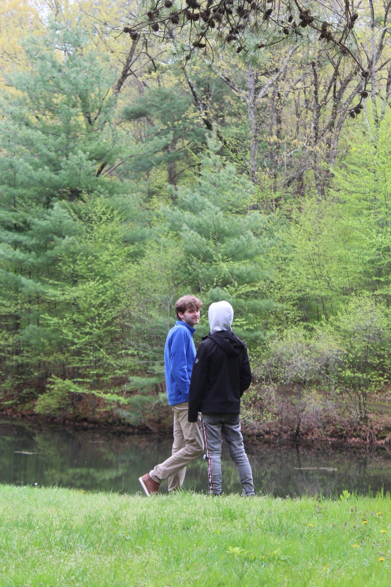
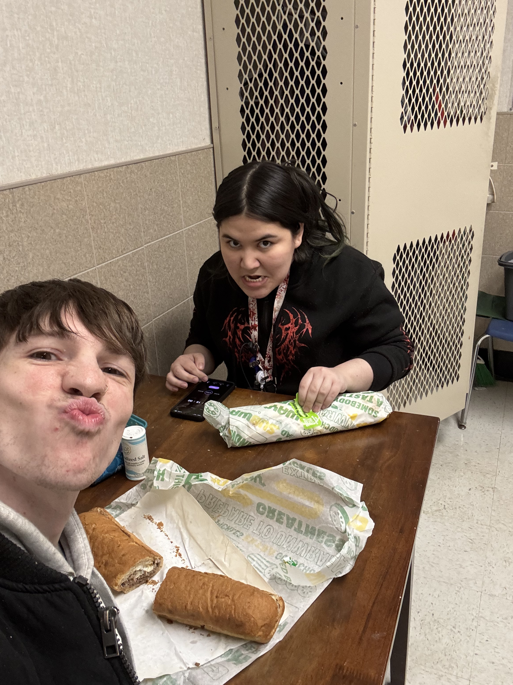
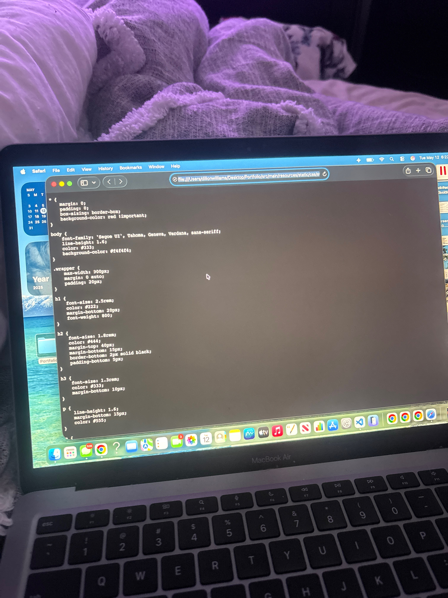
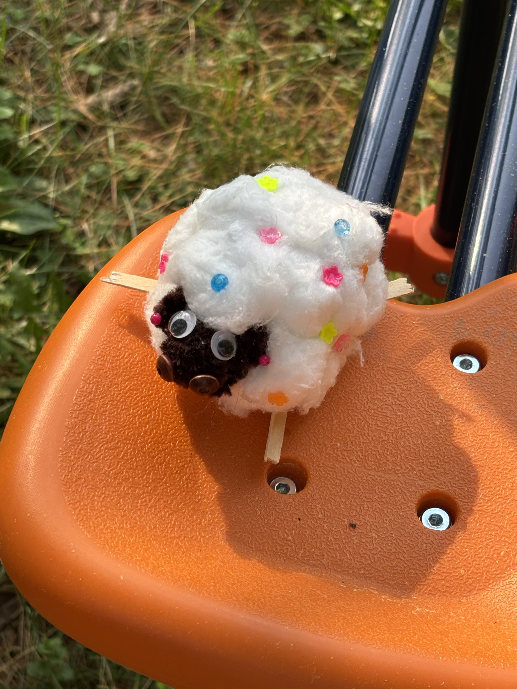
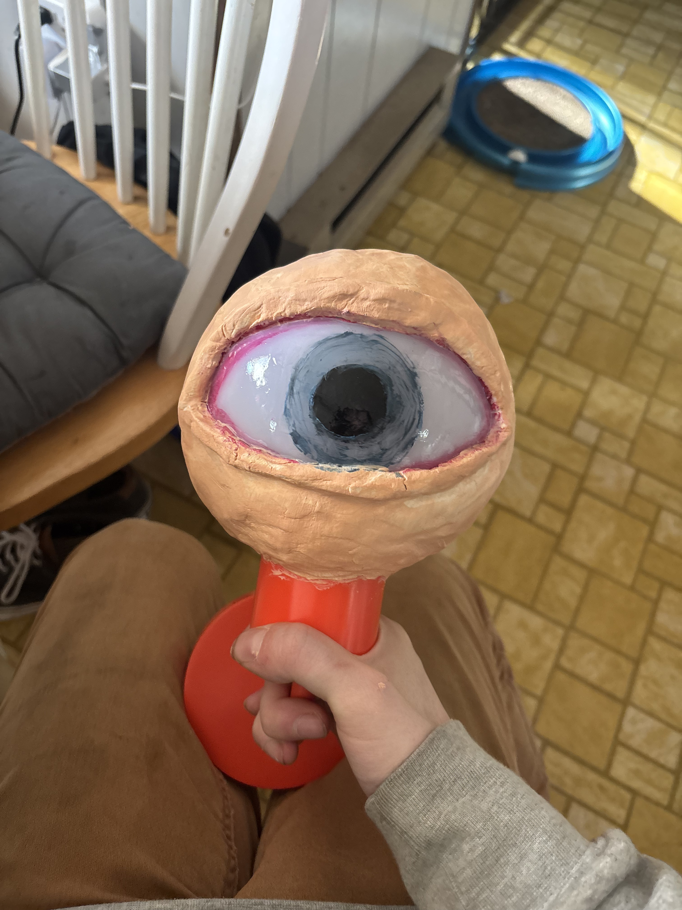

Building With
HTML, CSS, GitHub, Netlify, responsive layouts, and accessible page structure.
About Dillon
I’m Dillon Williams, a full-stack developer in progress with a background in psychology and UX design. I currently work as a shift lead at Walgreens, and spend my free time building projects, learning new technologies, and improving the way people interact with digital tools.
My goal is to create products that feel intuitive, thoughtful, and genuinely helpful — combining technical skill with an understanding of how people think and behave.
Toolbox
The tools I’m using, learning, and applying across my portfolio projects.
HTML, CSS, GitHub, Netlify, responsive layouts, and accessible page structure.
JavaScript, SQL, backend logic, full-stack architecture, and dynamic interfaces.
UX research, wireframes, accessibility, user flows, psychology, and human-centered design.
Growth Path
A timeline of how my background, design training, and development practice connect.
Studied human behavior, social systems, communication, and decision-making — the foundation for how I think about users.
Started learning user research, wireframing, accessibility, user flows, KPIs, and human-centered design practices.
Began building my portfolio from scratch as both a website and a learning lab.
Continuing into interactivity, data handling, dynamic pages, and full-stack functionality.
Beyond the Code
A small visual space for the people, places, and moments that keep me creative, grounded, and curious.

A quiet walk, a little fresh air, and a reminder to look up from the screen.

Subway break with chaotic bestie energy.

Late-night building, purple lights, and one very patient laptop.

A tiny handmade sheep with main character energy.

Proof that creativity gets weird before it gets good.